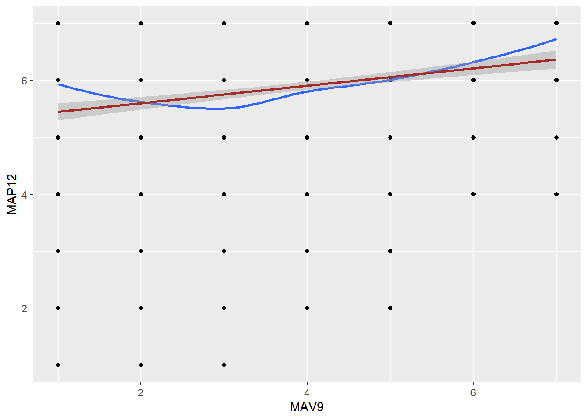
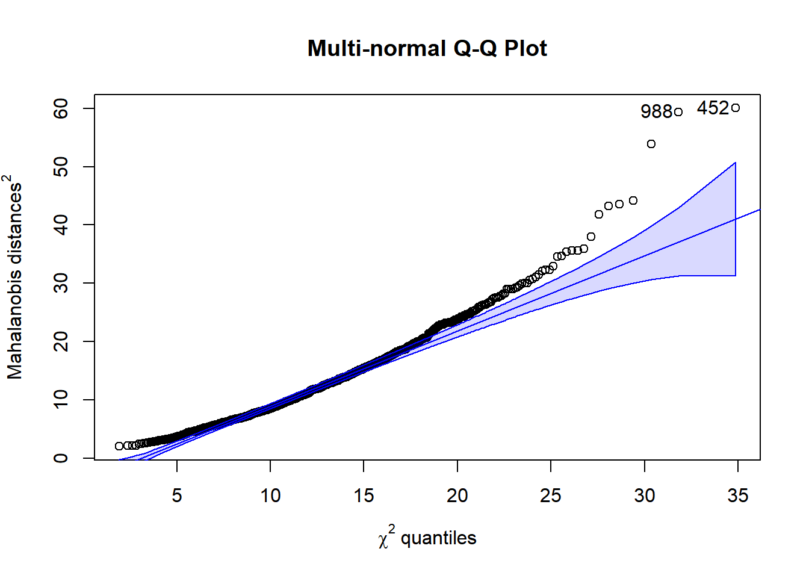
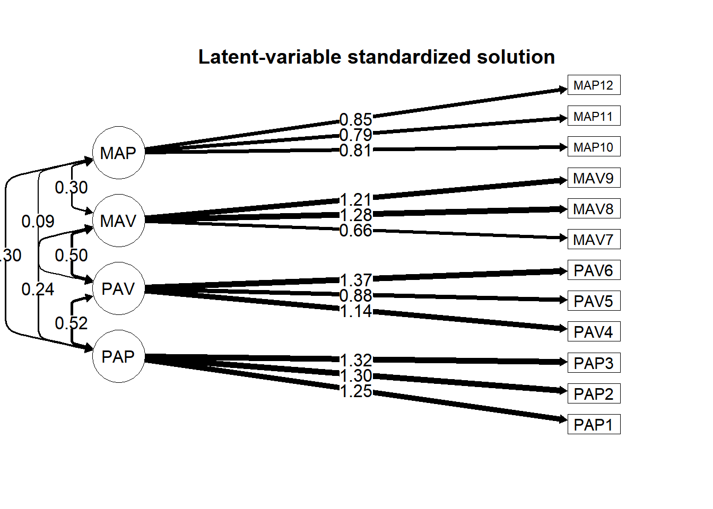

10 Week 09: Confirmatory Factor Analysis
Fitting CFA to continuous data and categorical data
The lavaan package (Rosseel, Jorgensen, and De Wilde 2024) is well developed and frequently used for estimating confirmatory factor analysis (CFA) models. Accompanying lavaan, the semTools package (Jorgensen et al. 2025) provides additional resources such as for comparing models and for estimating internal consistency reliability coefficients.
In this handout, we will do the following:
- carry out the preparatory steps to CFA,
- conduct a CFA and examine the fit indices, parameter estimates, and other information contained in the CFA fitted object,
- use alternative model specifications and conduct a model comparison,
- estimate and save persons’ factor scores,
- conduct a CFA with categorical data.
10.1 Preparatory steps
First let’s read in our data and take a look at the descriptive statistics and the correlation matrix.
## 'data.frame': 1022 obs. of 13 variables:
## $ PID : chr "S0001" "S0002" "S0003" "S0004" ...
## $ PAP1 : int 6 7 6 6 7 7 7 7 7 5 ...
## $ PAP2 : int 7 7 5 6 7 7 7 7 7 6 ...
## $ PAP3 : int 6 7 5 6 7 7 7 5 7 5 ...
## $ PAV4 : int 6 7 5 6 7 7 7 7 7 6 ...
## $ PAV5 : int 5 2 5 6 4 4 7 6 4 7 ...
## $ PAV6 : int 1 7 6 6 7 7 7 7 7 3 ...
## $ MAV7 : int 7 6 5 4 3 6 7 5 4 6 ...
## $ MAV8 : int 6 2 6 1 6 7 7 3 4 7 ...
## $ MAV9 : int 6 2 4 1 5 7 7 1 5 7 ...
## $ MAP10: int 7 7 7 6 7 7 7 7 7 6 ...
## $ MAP11: int 7 7 7 6 7 7 7 7 7 7 ...
## $ MAP12: int 7 7 6 5 7 7 7 7 7 7 ...Notice that this is the same data set we used in class during Week 8.
With these data, there are four hypothesized constructs, which are described in Bandalos (2018, 335–37). The first three letters of each item’s name reminds us which construct it is intended to represent.
10.1.1 Describing the data
Here are the descriptive statistics, treating the data as continuous. The low-fidelity version of this function is simply psych::describe(dat). The fancy code is optional, but nice for making it pretty. I learned about the flextable package (Gohel and Skintzos 2025) from Havi.
n | mean | sd | median | min | max | skew | kurtosis | se |
|---|---|---|---|---|---|---|---|---|
1,022 | 5.15 | 1.55 | 5 | 1 | 7 | -0.75 | 0.12 | 0.05 |
1,022 | 5.20 | 1.53 | 5 | 1 | 7 | -0.85 | 0.24 | 0.05 |
1,022 | 4.91 | 1.55 | 5 | 1 | 7 | -0.51 | -0.32 | 0.05 |
1,022 | 4.86 | 1.94 | 5 | 1 | 7 | -0.60 | -0.82 | 0.06 |
1,022 | 4.71 | 1.68 | 5 | 1 | 7 | -0.43 | -0.62 | 0.05 |
1,022 | 4.19 | 1.72 | 4 | 1 | 7 | -0.05 | -0.87 | 0.05 |
1,022 | 5.10 | 1.42 | 5 | 1 | 7 | -0.59 | -0.06 | 0.04 |
1,022 | 4.14 | 1.50 | 4 | 1 | 7 | -0.06 | -0.54 | 0.05 |
1,022 | 3.89 | 1.60 | 4 | 1 | 7 | 0.06 | -0.64 | 0.05 |
1,022 | 5.76 | 1.18 | 6 | 1 | 7 | -1.03 | 1.22 | 0.04 |
1,022 | 6.21 | 0.98 | 7 | 1 | 7 | -1.22 | 1.34 | 0.03 |
1,022 | 5.89 | 1.20 | 6 | 1 | 7 | -1.13 | 1.21 | 0.04 |
As usual, we can use the cor() and cov() functions to obtain the correlation and covariance matrices.
Here is some optional formatting code. If this causes problems in R, just use cor() and cov().
R <- cor(dat)
# Removing the upper diagonal from the cov matrix:
R[upper.tri(R, diag = FALSE)] <- NA
# Making the output pretty:
R %>% as.data.frame() %>%
rownames_to_column("var") %>%
mutate(across(where(is.numeric), round, 3 )) %>% # rounding numeric columns
flextable() %>% autofit() %>% fit_to_width(7.5)var | PAP1 | PAP2 | PAP3 | PAV4 | PAV5 | PAV6 | MAV7 | MAV8 | MAV9 | MAP10 | MAP11 | MAP12 |
|---|---|---|---|---|---|---|---|---|---|---|---|---|
PAP1 | 1.000 | |||||||||||
PAP2 | 0.690 | 1.000 | ||||||||||
PAP3 | 0.702 | 0.712 | 1.000 | |||||||||
PAV4 | 0.166 | 0.245 | 0.188 | 1.000 | ||||||||
PAV5 | 0.163 | 0.248 | 0.179 | 0.380 | 1.000 | |||||||
PAV6 | 0.293 | 0.421 | 0.416 | 0.482 | 0.377 | 1.000 | ||||||
MAV7 | -0.040 | 0.068 | 0.021 | 0.227 | 0.328 | 0.238 | 1.000 | |||||
MAV8 | 0.143 | 0.212 | 0.217 | 0.218 | 0.280 | 0.325 | 0.386 | 1.000 | ||||
MAV9 | 0.078 | 0.145 | 0.163 | 0.119 | 0.254 | 0.301 | 0.335 | 0.651 | 1.000 | |||
MAP10 | 0.280 | 0.254 | 0.223 | 0.039 | 0.066 | 0.059 | 0.018 | 0.152 | 0.129 | 1.000 | ||
MAP11 | 0.182 | 0.202 | 0.186 | 0.012 | -0.008 | 0.051 | 0.052 | 0.202 | 0.177 | 0.558 | 1.00 | |
MAP12 | 0.112 | 0.154 | 0.128 | 0.029 | 0.021 | 0.084 | 0.160 | 0.221 | 0.205 | 0.483 | 0.58 | 1 |
# Because we just removed the upper matrix from R, for making the printout
# pretty, we can get back to the full R matrix if we need to using the
# force `Matrix::symmetric()` function:
library(Matrix)
# help("forceSymmetric", package = "Matrix")
R <- Matrix::forceSymmetric(R, uplo="L")
R <- as.matrix(R)We notice that there is variation in the magnitude of these correlations. We see that the items hypothesized to load on the same constructs tend to more strongly correlate with each other than with the other items in the data set. Our descriptive statistics suggest the scale goes from 1 to 7. We should examine how many functioning scale points are used in each item. We also see that most of the items have negative skew, with most of the means and medians being higher than the midpoint of 4. MAP11 seems to have the strongest skew and smallest standard deviation.
Here is the covariance matrix, using the same kind of pretty code. If this causes problems in R, just use cov(dat):
S <- cov(dat)
# Removing the upper diagonal from the cov matrix:
S[upper.tri(S, diag = FALSE)] <- NA
# Making the output pretty:
S %>% as.data.frame() %>%
rownames_to_column("var") %>%
mutate(across(where(is.numeric), round, 3 )) %>% # rounding numeric columns
flextable() %>% autofit() %>% fit_to_width(7.5)var | PAP1 | PAP2 | PAP3 | PAV4 | PAV5 | PAV6 | MAV7 | MAV8 | MAV9 | MAP10 | MAP11 | MAP12 |
|---|---|---|---|---|---|---|---|---|---|---|---|---|
PAP1 | 2.393 | |||||||||||
PAP2 | 1.631 | 2.337 | ||||||||||
PAP3 | 1.689 | 1.693 | 2.417 | |||||||||
PAV4 | 0.498 | 0.726 | 0.568 | 3.758 | ||||||||
PAV5 | 0.424 | 0.637 | 0.466 | 1.237 | 2.822 | |||||||
PAV6 | 0.778 | 1.104 | 1.110 | 1.604 | 1.087 | 2.945 | ||||||
MAV7 | -0.087 | 0.148 | 0.046 | 0.627 | 0.785 | 0.582 | 2.028 | |||||
MAV8 | 0.332 | 0.487 | 0.507 | 0.636 | 0.708 | 0.838 | 0.827 | 2.262 | ||||
MAV9 | 0.194 | 0.356 | 0.408 | 0.370 | 0.685 | 0.830 | 0.764 | 1.572 | 2.576 | |||
MAP10 | 0.510 | 0.458 | 0.409 | 0.089 | 0.131 | 0.120 | 0.031 | 0.270 | 0.244 | 1.389 | ||
MAP11 | 0.275 | 0.303 | 0.283 | 0.022 | -0.012 | 0.086 | 0.072 | 0.297 | 0.279 | 0.644 | 0.957 | |
MAP12 | 0.207 | 0.282 | 0.237 | 0.067 | 0.042 | 0.172 | 0.272 | 0.397 | 0.393 | 0.681 | 0.679 | 1.432 |
We’ll look at this observed covariance matrix when we compare the reproduced covariance matrix to it.
10.1.1.1 An article reported R and the SDs, so how can I get S?
If you only have access to the correlation matrix and standard deviations, you can get the covariance matrix:
R_lower <- read.csv("Week09_BandalosTable13.3.csv")
R_lower <- as.matrix(R_lower)
SDs <- c(1.55, 1.53, 1.56, 1.94, 1.68, 1.72,
1.42, 1.50, 1.61, 1.18, 0.98, 1.20)
D <- diag(SDs)
S.from.R <- D %*% R %*% D
round(S.from.R, 2)## [,1] [,2] [,3] [,4] [,5] [,6] [,7] [,8] [,9] [,10] [,11] [,12]
## [1,] 2.40 1.64 1.70 0.50 0.43 0.78 -0.09 0.33 0.20 0.51 0.28 0.21
## [2,] 1.64 2.34 1.70 0.73 0.64 1.11 0.15 0.49 0.36 0.46 0.30 0.28
## [3,] 1.70 1.70 2.43 0.57 0.47 1.12 0.05 0.51 0.41 0.41 0.28 0.24
## [4,] 0.50 0.73 0.57 3.76 1.24 1.61 0.63 0.63 0.37 0.09 0.02 0.07
## [5,] 0.43 0.64 0.47 1.24 2.82 1.09 0.78 0.71 0.69 0.13 -0.01 0.04
## [6,] 0.78 1.11 1.12 1.61 1.09 2.96 0.58 0.84 0.83 0.12 0.09 0.17
## [7,] -0.09 0.15 0.05 0.63 0.78 0.58 2.02 0.82 0.76 0.03 0.07 0.27
## [8,] 0.33 0.49 0.51 0.63 0.71 0.84 0.82 2.25 1.57 0.27 0.30 0.40
## [9,] 0.20 0.36 0.41 0.37 0.69 0.83 0.76 1.57 2.59 0.24 0.28 0.40
## [10,] 0.51 0.46 0.41 0.09 0.13 0.12 0.03 0.27 0.24 1.39 0.65 0.68
## [11,] 0.28 0.30 0.28 0.02 -0.01 0.09 0.07 0.30 0.28 0.65 0.96 0.68
## [12,] 0.21 0.28 0.24 0.07 0.04 0.17 0.27 0.40 0.40 0.68 0.68 1.4410.1.1.2 Describing from a categorical perspective
We did this in the last session, which has some easier code to get the descriptive statistics item-by-item. Here’s the fancy code for getting the plot of all the items’ responses:
library(SmartEDA)
freqout <- SmartEDA::ExpCustomStat(dat,
Cvar = colnames(dat),
stat = c("Count","prop"),
gpby = FALSE)
names(freqout) <- c("Category", "Item", "Frequency", "Percent")
freqout_alpha <- freqout %>%
arrange(Item, Category)
# head(freqout_alpha, 10)
library(ggplot2)
library(gridExtra)
freqout %>%
# This mutate function is optional, just to get the items to be in the order we want:
mutate(Item = factor(Item, levels = unique(freqout$Item) )) %>%
ggplot( aes(x = Category, y = Frequency)) +
geom_col() +
facet_wrap(. ~ Item, nrow = 3 )
It seems like 75% of our variables have ample responses in all of the categories. We might be concerned with MAP11 and maybe with MAP10 and MAP12 because there are not many responses in the lower two categories. If there were only four categories being used, we should treat these data as categorical.
10.1.1.2.1 The easiest way to examine counts
If all we’re looking for are the frequency of responses to each category in each item, a simple approach is to specify our items as being ordered factors instead of numeric and using the summary() function on our data.
## PAP1 PAP2 PAP3 PAV4 PAV5 PAV6 MAV7 MAV8 MAV9 MAP10 MAP11 MAP12
## 1: 35 1: 29 1: 31 1: 84 1: 47 1: 64 1: 13 1: 42 1: 80 1: 6 1: 1 1: 5
## 2: 32 2: 47 2: 46 2: 82 2: 76 2:133 2: 46 2:118 2:132 2: 10 2: 1 2: 10
## 3: 71 3: 56 3:109 3: 93 3:117 3:159 3: 79 3:174 3:197 3: 26 3: 13 3: 26
## 4:162 4:145 4:182 4:114 4:180 4:216 4:154 4:261 4:260 4: 96 4: 45 4: 88
## 5:262 5:252 5:265 5:185 5:237 5:206 5:314 5:248 5:185 5:230 5:166 5:199
## 6:222 6:267 6:203 6:189 6:193 6:125 6:225 6:111 6:100 6:333 6:278 6:289
## 7:238 7:226 7:186 7:275 7:172 7:119 7:191 7: 68 7: 68 7:321 7:518 7:40510.1.1.3 Addressing assumptions
With linearity, we could examine the bivariate plots all pairs of variables using the plot(dat) function but this will be uninterpretable because of the small size of each of the plots. Because we have 12 variables, there will be \(12(12-1) / 2 = 66\) pairwise plots.
If we wanted to examine a specific pair of items, we can use the geom_smooth() function in GGplot2. First, we create a line that is allowed to curve so that it best describes the nonlinear relationship between the two variables. For this, we use the method = "loess" argument. We can think about that line as lots of little, local, regressions on the data at each small increment in the data. After that, we overlay a line that is forced to be linear. If the linear line reasonably matches the loess line, we can argue for linearity.
Here’s an example with two items that seem to have a small amount of non-linearity, though probably not enough to hurt this assumption:
ggplot(dat, aes(x = MAV9, y = MAP12)) +
geom_point() +
geom_smooth(method = "loess", se = FALSE) +
geom_smooth(method = "lm", color = "brown")
We can detect multivariate outliers using our usual procedures:
varbs <- cbind(dat) # Note that in our data, we're using all of the columns
distances <- mahalanobis(varbs,
center = colMeans(varbs),
cov = cov(varbs))
raw$distances <- distances
# Let's keep a record of those who exceed the p < .001 criterion, if any:
raw$p <- pchisq(distances,
df = (ncol(varbs)-1), # df is number of variables - 1
lower.tail = FALSE)We can see which cases in our data set are flagged as outliers. I think Base R is better here than tidyverse.
# Let's use Base R to save a column that indicates whether the case is an outlier.
raw$outlier <- ifelse(raw$p < .001, 1, 0)
# Let's print those rows for which their outlier status is true:
out.liars <- raw[raw$outlier == 1, c("PID", "distances", "p", "outlier")]
out.liars## PID distances p outlier
## 125 S0125 43.56740 8.648903e-06 1
## 172 S0172 35.93353 1.735968e-04 1
## 194 S0194 43.25519 9.804388e-06 1
## 199 S0199 32.92628 5.408306e-04 1
## 296 S0296 34.65967 2.819395e-04 1
## 371 S0371 41.84562 1.722452e-05 1
## 393 S0393 32.09814 7.355548e-04 1
## 452 S0452 60.02265 9.182751e-09 1
## 486 S0486 35.56532 1.998225e-04 1
## 497 S0497 31.51915 9.106198e-04 1
## 694 S0694 35.55273 2.007845e-04 1
## 705 S0705 37.99227 7.847168e-05 1
## 712 S0712 44.19936 6.705832e-06 1
## 743 S0743 35.43172 2.102671e-04 1
## 760 S0760 34.56138 2.926267e-04 1
## 823 S0823 32.29947 6.827257e-04 1
## 840 S0840 53.85349 1.255264e-07 1
## 850 S0850 32.34198 6.720523e-04 1
## 988 S0988 59.38391 1.206490e-08 1Dang! There are a lot of multivariate outliers. We can count how many there and see there are 19:
## [1] 19For convenience, we can sort those rows by their distances to see who are the most extreme outliers.60
## PID distances p outlier
## 1 S0452 60.02265 9.182751e-09 1
## 2 S0988 59.38391 1.206490e-08 1
## 3 S0840 53.85349 1.255264e-07 1
## 4 S0712 44.19936 6.705832e-06 1
## 5 S0125 43.56740 8.648903e-06 1
## 6 S0194 43.25519 9.804388e-06 1
## 7 S0371 41.84562 1.722452e-05 1
## 8 S0705 37.99227 7.847168e-05 1
## 9 S0172 35.93353 1.735968e-04 1
## 10 S0486 35.56532 1.998225e-04 1
## 11 S0694 35.55273 2.007845e-04 1
## 12 S0743 35.43172 2.102671e-04 1
## 13 S0296 34.65967 2.819395e-04 1
## 14 S0760 34.56138 2.926267e-04 1
## 15 S0199 32.92628 5.408306e-04 1
## 16 S0850 32.34198 6.720523e-04 1
## 17 S0823 32.29947 6.827257e-04 1
## 18 S0393 32.09814 7.355548e-04 1
## 19 S0497 31.51915 9.106198e-04 1It seems like Person S0452 is the most extreme outlier, S0988 is the second most extreme outlier, and so forth.
Let’s examine the multivariate Q-Q plot based on the Mahalanobis distances:61
car::qqPlot(distances,
distribution = "chisq", df = mean(distances),
lwd = 1,
grid = FALSE,
main = "Multi-normal Q-Q Plot",
xlab = expression(chi^2 * " quantiles"),
ylab = expression("Mahalanobis distances "^2))
## [1] 452 988If we are expected to also report a statistical test of normality, we can use the mulitvariate Shapiro-Wilk test that we used in Week 3. The mshapiro.test() function from the mvnormtest package (Jarek 2024). This function requires the data be arranged as rows instead of columns, so we’ll use the transpose function, t() within the test.
##
## Shapiro-Wilk normality test
##
## data: Z
## W = 0.97116, p-value = 2.257e-13We see results that are consistent with our outliers and Mahalanobis distance Q-Q plot. The Shapiro-Wilk normality test (W = 0.97, p = < .01) suggests the data are statistically significantly different from a normal distribution.
Another multivariate normality test we might encounter in research is the Mardia test. We can use the mardiaKurtosis() function from the semTools package (Jorgensen et al. 2025). 62
## b2d z p
## 195.531 24.007 0.000Even though the absolute values of the skew and kurtosis of each of the variables in our earlier descriptive statistics were all below 2.0, there appears to be a non-normal distribution. With the Mardia kurtosis z-statistic \((z = 24.01, p < .05)\) being statistically significant, we see more evidence that the assumption of multivariate normality was not met. This statistical significance is not surprising because we have a large sample size. Among all of the sources of evidence, we can probably trust the plots over these statistical tests of the multivariate normality; nonetheless, we will encounter these in publications and possibly from reviewers requesting them.
This collection of evidence suggests that the multivariate normality assumption was not met. This result should inform our decisions about which estimation method to use and whether to use adjustments. Instead of using maximum likelihood estimation, we can use a robust estimation approach, specifically the “maximum likelihood robust” (MLR) method.63
10.2 Fitting a CFA model
Before we fit the CFA model using the lavaan package, we need to provide the CFA model specification. We are specifying four factors, which we’re naming PAP, PAV, MAV, and MAP. We indicate which variables load on which factor with the =~ operator in lavaan’s language. The default is to set each factor’s metric to be on the scale of its first variable.
library(lavaan)
mymod <- "PAP =~ PAP1 + PAP2 + PAP3
PAV =~ PAV4 + PAV5 + PAV6
MAV =~ MAV7 + MAV8 + MAV9
MAP =~ MAP10 + MAP11 + MAP12"Now that we have the model specification saved to our mymod object, we can fit the model to our data using the cfa() function. The first argument is the model specification. In the data = argument, we include the raw data set. We use the estimator = "MLR" to specify the robust maximum likelihood estimation method. We can use the mimic = "Mplus" argument if we wish to acquire output that is similar to what it would be if we were to use Mplus software.
At this point, we should look at whether there were any errors when we attempt to fit the model. For instance, if we get a warning that says The variance-covariance matrix of the estimated parameters (vcov) does not appear to be positive definite! there is something wrong with our model specification. More than likely, our model is underidentified and we need to go back to our specification.
If we did not have access to the raw data but only had the covariance matrix, S, we can include the sample.cov = argument in place of the data = argument. We also need to specify the number of persons, which here we’ll assign to the object n_p, which is 1022.64
S <- cov(dat)
n_p <- nrow(dat)
cfa_fit_S <- cfa(mymod,
sample.cov = S,
sample.nobs = n_p,
mimic = "Mplus")We will use the earlier specification, with the raw data and the robust estimation. We can use the summary() function on our object that contains the CFA result. We can also ask for the fit indices, standardized coefficients, and the r-square of the loadings using these respective three arguments.
## lavaan 0.6-19 ended normally after 46 iterations
##
## Estimator ML
## Optimization method NLMINB
## Number of model parameters 42
##
## Number of observations 1022
## Number of missing patterns 1
##
## Model Test User Model:
## Standard Scaled
## Test Statistic 283.977 260.087
## Degrees of freedom 48 48
## P-value (Chi-square) 0.000 0.000
## Scaling correction factor 1.092
## Yuan-Bentler correction (Mplus variant)
##
## Model Test Baseline Model:
##
## Test statistic 4421.866 3657.087
## Degrees of freedom 66 66
## P-value 0.000 0.000
## Scaling correction factor 1.209
##
## User Model versus Baseline Model:
##
## Comparative Fit Index (CFI) 0.946 0.941
## Tucker-Lewis Index (TLI) 0.926 0.919
##
## Robust Comparative Fit Index (CFI) 0.947
## Robust Tucker-Lewis Index (TLI) 0.927
##
## Loglikelihood and Information Criteria:
##
## Loglikelihood user model (H0) -20006.917 -20006.917
## Scaling correction factor 1.227
## for the MLR correction
## Loglikelihood unrestricted model (H1) -19864.929 -19864.929
## Scaling correction factor 1.155
## for the MLR correction
##
## Akaike (AIC) 40097.835 40097.835
## Bayesian (BIC) 40304.875 40304.875
## Sample-size adjusted Bayesian (SABIC) 40171.478 40171.478
##
## Root Mean Square Error of Approximation:
##
## RMSEA 0.069 0.066
## 90 Percent confidence interval - lower 0.062 0.058
## 90 Percent confidence interval - upper 0.077 0.073
## P-value H_0: RMSEA <= 0.050 0.000 0.000
## P-value H_0: RMSEA >= 0.080 0.013 0.001
##
## Robust RMSEA 0.069
## 90 Percent confidence interval - lower 0.061
## 90 Percent confidence interval - upper 0.077
## P-value H_0: Robust RMSEA <= 0.050 0.000
## P-value H_0: Robust RMSEA >= 0.080 0.012
##
## Standardized Root Mean Square Residual:
##
## SRMR 0.046 0.046
##
## Parameter Estimates:
##
## Standard errors Sandwich
## Information bread Observed
## Observed information based on Hessian
##
## Latent Variables:
## Estimate Std.Err z-value P(>|z|) Std.lv Std.all
## PAP =~
## PAP1 1.000 1.255 0.812
## PAP2 1.035 0.037 28.243 0.000 1.298 0.850
## PAP3 1.052 0.038 27.683 0.000 1.320 0.850
## PAV =~
## PAV4 1.000 1.144 0.591
## PAV5 0.772 0.062 12.356 0.000 0.884 0.526
## PAV6 1.195 0.082 14.615 0.000 1.368 0.797
## MAV =~
## MAV7 1.000 0.657 0.462
## MAV8 1.956 0.169 11.600 0.000 1.285 0.855
## MAV9 1.845 0.160 11.547 0.000 1.212 0.756
## MAP =~
## MAP10 1.000 0.814 0.691
## MAP11 0.974 0.056 17.430 0.000 0.793 0.811
## MAP12 1.041 0.066 15.885 0.000 0.847 0.708
##
## Covariances:
## Estimate Std.Err z-value P(>|z|) Std.lv Std.all
## PAP ~~
## PAV 0.751 0.074 10.112 0.000 0.523 0.523
## MAV 0.197 0.038 5.123 0.000 0.238 0.238
## MAP 0.308 0.046 6.719 0.000 0.301 0.301
## PAV ~~
## MAV 0.378 0.056 6.693 0.000 0.502 0.502
## MAP 0.080 0.038 2.133 0.033 0.086 0.086
## MAV ~~
## MAP 0.159 0.024 6.558 0.000 0.297 0.297
##
## Intercepts:
## Estimate Std.Err z-value P(>|z|) Std.lv Std.all
## .PAP1 5.155 0.048 106.570 0.000 5.155 3.334
## .PAP2 5.201 0.048 108.813 0.000 5.201 3.404
## .PAP3 4.915 0.049 101.118 0.000 4.915 3.163
## .PAV4 4.860 0.061 80.186 0.000 4.860 2.508
## .PAV5 4.713 0.053 89.744 0.000 4.713 2.807
## .PAV6 4.192 0.054 78.131 0.000 4.192 2.444
## .MAV7 5.103 0.045 114.616 0.000 5.103 3.585
## .MAV8 4.135 0.047 87.939 0.000 4.135 2.751
## .MAV9 3.890 0.050 77.534 0.000 3.890 2.425
## .MAP10 5.756 0.037 156.210 0.000 5.756 4.886
## .MAP11 6.209 0.031 203.007 0.000 6.209 6.350
## .MAP12 5.889 0.037 157.389 0.000 5.889 4.923
##
## Variances:
## Estimate Std.Err z-value P(>|z|) Std.lv Std.all
## .PAP1 0.816 0.063 12.990 0.000 0.816 0.341
## .PAP2 0.649 0.068 9.558 0.000 0.649 0.278
## .PAP3 0.671 0.079 8.483 0.000 0.671 0.278
## .PAV4 2.445 0.153 15.983 0.000 2.445 0.651
## .PAV5 2.038 0.116 17.564 0.000 2.038 0.723
## .PAV6 1.071 0.139 7.692 0.000 1.071 0.364
## .MAV7 1.594 0.081 19.625 0.000 1.594 0.787
## .MAV8 0.609 0.085 7.123 0.000 0.609 0.269
## .MAV9 1.104 0.100 11.048 0.000 1.104 0.429
## .MAP10 0.725 0.062 11.609 0.000 0.725 0.522
## .MAP11 0.327 0.033 9.775 0.000 0.327 0.342
## .MAP12 0.713 0.057 12.606 0.000 0.713 0.498
## PAP 1.575 0.114 13.872 0.000 1.000 1.000
## PAV 1.310 0.148 8.832 0.000 1.000 1.000
## MAV 0.432 0.070 6.200 0.000 1.000 1.000
## MAP 0.663 0.067 9.850 0.000 1.000 1.000
##
## R-Square:
## Estimate
## PAP1 0.659
## PAP2 0.722
## PAP3 0.722
## PAV4 0.349
## PAV5 0.277
## PAV6 0.636
## MAV7 0.213
## MAV8 0.731
## MAV9 0.571
## MAP10 0.478
## MAP11 0.658
## MAP12 0.50210.2.1 Making sure the model was correctly estimated
The first place our eyes should go in the output is the first line. With luck, it will report that lavaan ended normally after some number of iterations. Our output suggests the model ended normally, so we are in good shape.
We should then make sure the model included all of our data by seeing if the Number of observations is what we expect it to be, which it is in this case (1022).
Additionally, we should be sure that the number of parameters is what we expect. We see that there are 42 parameters, which is what we expect if we include the means of the items. This is because there are 8 pattern coefficients, 12 item error variances, 4 factor variances, and 6 factor covariances, as well as 12 item means, the latter of which is excluded from our calculation of the degrees of freedom. The degrees of freedom is the number unique cells in the sample covariance matrix minus the number of parameters. The number of unique cells is \(\frac{\nu(\nu + 1)}{2} = 78\), where \(\nu\) is the number of variables (i.e., the 12 items). The number of parameters excluding the item means is \(30\), making our degrees of freedom \(48\).
10.2.2 Evaluating the model fit
We can proceed to look at the model fit and parameter estimates. Looking at the fit statistics, we see there is some degree of mispecification in this model. Because we used robust estimation, we read the indices under the Robust column in the output. The chi-square fit index of \(260.087\), with its \(48\) degrees of freedom, suggests the model does not fit. The global fit indexes are borderline okay. Neither the comparative fit index, \(0.947\), nor the root mean square error of approximation, \(0.069\), exceed the traditional criteria for “good” fit (CFI \(\ge .95\) and RMSEA \(\le .06\)) but they are close. The standardized root mean square residual of \(0.046\) does meet the criterion (SRMR \(\le .08\)).
If we seek to save these fit indexes to an object, we can use the fitMeasures() function. These have .scaled and .robust suffixes because we used robust maximum likelihood as the estimation method. If we simply used estimator = "ML", which is the default, we would remove those suffixes.
fit_stats <- fitMeasures(cfa_fit, c("chisq.scaled","df.scaled", "pvalue.scaled",
"cfi.robust",
"tli.robust",
"rmsea.robust",
"srmr"))
fit_stats## chisq.scaled df.scaled pvalue.scaled cfi.robust tli.robust rmsea.robust srmr
## 260.087 48.000 0.000 0.947 0.927 0.069 0.04610.2.3 Interpretting the parameter estimates
Looking back at the main output, we see that the unstandardized parameter estimates are in the Estimate column. The first pattern coefficient for each factor is \(1.00\). This is because the default specification is to fix the first variable to be the reference variable, thereby setting the metric of the factor to be the same as that variable. The other coefficients on that factor are interpreted as their expected change in their units based on a one-unit change in the factor, where that unit is the same as that of the reference variable.
In the covariances section, we see the covariances among the factors. The standardized column shows the correlations among the factors. We see that these are all statistically significant and that the correlation between PAV and MAP is the weakest. We might want to evaluate the degree to which these results are consistent with our theory about the strength and direction of these latent-variable relationships.
In the variances section of the output, we see that the variances of the factors are in the units of their first loading manifest variables. For example, the variance of the first factor is \(1.575\). In this section of the output, we also see the variances of the manifest variables (i.e., the observed variables that the factors predict). These are the error (or residual) variances.
In the intercepts section, we see the estimates of the means of each manifest variable and factor. We can see that the factors are centered around zero. In evaluating the fit of the CFA model, we are not usually interested in this section.
For all of the parameter estimates, there are versions of their estimates in a completely standardized model, in the Std.all column. The observed variables and the factors are scaled as z-scores. In interpreting the first item’s standardized pattern coefficient, \(\lambda_{1,1}\), we can say that the expected amount of change is \(0.812\) standard-deviation units for each \(1\) standard-deviation unit change in the factor score. With this particular model, the \(R^2\) estimates of the observed variables are the same as the squared standardized loadings. For instance, \(\lambda_{1,1}^2 = R_{\text{PAP}1}^2 = 0.659\). And, as mentioned in the covariances section, any standardized covariances are interpreted as correlations.
The Std.lv column includes the estimates when the factors (the latent variables) are standardized but the observed variables are not. These pattern coefficients are interpreted as changes in the observed variable, on its original scale, for each \(1\) standard-deviation unit change in the factor score.
10.2.4 Further inspecting our model
10.2.4.1 Looking at the model’s covariance matrices
There are several covariances. In addition to the sample covariance matrix from the raw data \((\text{S})\), there is the model-implied covariance matrix \((\Sigma({\hat{\theta}}))\), the residual covariance matrix \((\Theta_{\delta})\), and the standardized residual covariance matrix.
We can get the model-implied covariance matrix from the fitted output using the fitted() function. We can isolate the covariance by attaching $cov to this object.
## PAP1 PAP2 PAP3 PAV4 PAV5 PAV6 MAV7 MAV8 MAV9 MAP10 MAP11 MAP12
## PAP1 2.391
## PAP2 1.629 2.335
## PAP3 1.657 1.715 2.414
## PAV4 0.751 0.777 0.790 3.754
## PAV5 0.580 0.600 0.610 1.011 2.819
## PAV6 0.897 0.928 0.944 1.565 1.209 2.942
## MAV7 0.197 0.203 0.207 0.378 0.292 0.451 2.026
## MAV8 0.384 0.398 0.404 0.739 0.570 0.883 0.844 2.260
## MAV9 0.363 0.375 0.382 0.697 0.538 0.833 0.796 1.558 2.573
## MAP10 0.308 0.319 0.324 0.080 0.062 0.096 0.159 0.311 0.293 1.388
## MAP11 0.300 0.310 0.316 0.078 0.060 0.093 0.155 0.303 0.286 0.646 0.956
## MAP12 0.320 0.332 0.337 0.083 0.064 0.100 0.165 0.323 0.305 0.690 0.672 1.431This seems to be similar to the sample covariance matrix, \(\text{S}\).
## PAP1 PAP2 PAP3 PAV4 PAV5 PAV6 MAV7 MAV8 MAV9 MAP10 MAP11 MAP12
## PAP1 2.391
## PAP2 1.629 2.335
## PAP3 1.687 1.691 2.414
## PAV4 0.497 0.726 0.567 3.754
## PAV5 0.424 0.637 0.466 1.236 2.819
## PAV6 0.778 1.103 1.109 1.602 1.086 2.942
## MAV7 -0.087 0.148 0.046 0.626 0.784 0.581 2.026
## MAV8 0.331 0.487 0.507 0.635 0.707 0.837 0.827 2.260
## MAV9 0.194 0.356 0.408 0.369 0.685 0.829 0.764 1.571 2.573
## MAP10 0.509 0.458 0.409 0.089 0.131 0.120 0.031 0.270 0.243 1.388
## MAP11 0.275 0.302 0.283 0.022 -0.012 0.086 0.072 0.297 0.278 0.643 0.956
## MAP12 0.207 0.281 0.237 0.067 0.042 0.172 0.272 0.397 0.393 0.680 0.679 1.431The discrepancy between \(\Sigma({\hat{\theta}})\) and \(\text{S}\) is the residual matrix. This discrepancy is the basis for the fit statistics. We can calculate it as S_sample - Sigma_theta given the objects we just created. Alternatively, we can get \(\Theta_{\delta}\) using the resid() function:
## $type
## [1] "raw"
##
## $cov
## PAP1 PAP2 PAP3 PAV4 PAV5 PAV6 MAV7 MAV8 MAV9 MAP10 MAP11 MAP12
## PAP1 0.000
## PAP2 0.000 0.000
## PAP3 0.030 -0.023 0.000
## PAV4 -0.253 -0.051 -0.222 0.000
## PAV5 -0.156 0.037 -0.144 0.224 0.000
## PAV6 -0.119 0.175 0.165 0.037 -0.122 0.000
## MAV7 -0.284 -0.056 -0.161 0.248 0.492 0.130 0.000
## MAV8 -0.053 0.089 0.102 -0.103 0.137 -0.046 -0.017 0.000
## MAV9 -0.169 -0.020 0.026 -0.328 0.147 -0.004 -0.033 0.013 0.000
## MAP10 0.201 0.139 0.085 0.009 0.069 0.024 -0.128 -0.041 -0.050 0.000
## MAP11 -0.025 -0.008 -0.033 -0.056 -0.073 -0.007 -0.082 -0.006 -0.007 -0.003 0.000
## MAP12 -0.114 -0.050 -0.100 -0.017 -0.023 0.072 0.106 0.073 0.088 -0.009 0.007 0.000
##
## $mean
## PAP1 PAP2 PAP3 PAV4 PAV5 PAV6 MAV7 MAV8 MAV9 MAP10 MAP11 MAP12
## 0 0 0 0 0 0 0 0 0 0 0 0Finally, if we need access to the standardized residuals, we can use the resid() function with the type = "standardized":
## $type
## [1] "standardized"
##
## $cov
## PAP1 PAP2 PAP3 PAV4 PAV5 PAV6 MAV7 MAV8 MAV9 MAP10 MAP11 MAP12
## PAP1 0.000
## PAP2 0.001 0.000
## PAP3 1.010 -0.926 0.000
## PAV4 -3.637 -0.767 -3.379 0.000
## PAV5 -2.247 0.600 -2.190 2.907 0.000
## PAV6 -2.613 3.469 3.507 1.055 -3.494 0.000
## MAV7 -4.237 -0.861 -2.424 2.911 6.958 1.867 0.000
## MAV8 -1.247 2.349 2.468 -1.831 2.123 -1.247 -0.669 0.000
## MAV9 -2.957 -0.368 0.467 -5.143 2.089 -0.075 -1.021 0.593 0.000
## MAP10 4.720 3.313 1.945 0.152 1.237 0.539 -2.591 -1.167 -1.125 0.000
## MAP11 -0.844 -0.287 -1.181 -1.275 -1.691 -0.242 -2.078 -0.269 -0.235 -0.354 0.000
## MAP12 -2.560 -1.202 -2.456 -0.264 -0.391 1.654 2.145 2.186 2.250 -0.857 1.089 0.000
##
## $mean
## PAP1 PAP2 PAP3 PAV4 PAV5 PAV6 MAV7 MAV8 MAV9 MAP10 MAP11 MAP12
## 0 0 0 0 0 0 0 0 0 0 0 0Because these are in z-score units, those standardized errors that are greater in absolute value than 2 are unexpected if the model has good fit. Although these can be inflated because of small standard deviations, some of the larger estimates are worth looking into. For example, with PAV5 and PAV7 there’s a z-score of 6.96, which is pretty big. It is a positive value indicating that the model-implied covariance (\(0.292\)) underestimated the covariance between these two variables.
10.2.5 Further inspecting our model’s parameters
10.2.5.1 Seeing which parameters were estimated
Sometimes, we want to see what all of the estimated parameters are in the model. We can use the inspect() function on our model’s output. This will report which parameters are estimated and enumerate them (from 1 up to 42 in our model). By default, some parameters are fixed and others are estimated. For example, with our specification, each factor’s first observed variable’s loading is not estimated because it is fixed to 1 in order to place the factor on a scale. We can see this in the $lambda part of the output, where those parameters are not enumerated but are instead marked as 0, indicating they were not estimated.
## $lambda
## PAP PAV MAV MAP
## PAP1 0 0 0 0
## PAP2 1 0 0 0
## PAP3 2 0 0 0
## PAV4 0 0 0 0
## PAV5 0 3 0 0
## PAV6 0 4 0 0
## MAV7 0 0 0 0
## MAV8 0 0 5 0
## MAV9 0 0 6 0
## MAP10 0 0 0 0
## MAP11 0 0 0 7
## MAP12 0 0 0 8
##
## $theta
## PAP1 PAP2 PAP3 PAV4 PAV5 PAV6 MAV7 MAV8 MAV9 MAP10 MAP11 MAP12
## PAP1 9
## PAP2 0 10
## PAP3 0 0 11
## PAV4 0 0 0 12
## PAV5 0 0 0 0 13
## PAV6 0 0 0 0 0 14
## MAV7 0 0 0 0 0 0 15
## MAV8 0 0 0 0 0 0 0 16
## MAV9 0 0 0 0 0 0 0 0 17
## MAP10 0 0 0 0 0 0 0 0 0 18
## MAP11 0 0 0 0 0 0 0 0 0 0 19
## MAP12 0 0 0 0 0 0 0 0 0 0 0 20
##
## $psi
## PAP PAV MAV MAP
## PAP 21
## PAV 25 22
## MAV 26 28 23
## MAP 27 29 30 24
##
## $nu
## intrcp
## PAP1 31
## PAP2 32
## PAP3 33
## PAV4 34
## PAV5 35
## PAV6 36
## MAV7 37
## MAV8 38
## MAV9 39
## MAP10 40
## MAP11 41
## MAP12 42
##
## $alpha
## intrcp
## PAP 0
## PAV 0
## MAV 0
## MAP 0We also see in the $theta portion of the output that all of the variances in the \(\Theta_{\delta}\) matrix are estimated whereas none of the covariances is. The parameters in the $psi part of the output are the estimated variances and covariances among the factors.65 By default, these are all estimated.66
10.2.5.2 Optional: Saving parameter estimates to a data frame
Though we can see the parameter estimates in the model output, we can also get them in data-frame format. This is convenient if we wish to save them to a data frame or export them to a CSV file. We see there are three operators here. We used the =~ in our model specification to refer to the factor-item loadings. The ~~ refers to variances and covariances, and the ~1 refers to the intercepts, which we can interpret in this model as the means. The lhs and rhs are the left and right hand sides of the operator, which we can use to filter which parameters we would like to deal with from the resulting data frame (as we do below).
## lhs op rhs est se z pvalue ci.lower ci.upper
## 1 PAP =~ PAP1 1.000 0.000 NA NA 1.000 1.000
## 2 PAP =~ PAP2 1.035 0.037 28.243 0.000 0.963 1.106
## 3 PAP =~ PAP3 1.052 0.038 27.683 0.000 0.978 1.127
## 4 PAV =~ PAV4 1.000 0.000 NA NA 1.000 1.000
## 5 PAV =~ PAV5 0.772 0.062 12.356 0.000 0.650 0.895
## 6 PAV =~ PAV6 1.195 0.082 14.615 0.000 1.035 1.355
## 7 MAV =~ MAV7 1.000 0.000 NA NA 1.000 1.000
## 8 MAV =~ MAV8 1.956 0.169 11.600 0.000 1.625 2.286
## 9 MAV =~ MAV9 1.845 0.160 11.547 0.000 1.532 2.158
## 10 MAP =~ MAP10 1.000 0.000 NA NA 1.000 1.000
## 11 MAP =~ MAP11 0.974 0.056 17.430 0.000 0.865 1.084
## 12 MAP =~ MAP12 1.041 0.066 15.885 0.000 0.912 1.169
## 13 PAP1 ~~ PAP1 0.816 0.063 12.990 0.000 0.693 0.939
## 14 PAP2 ~~ PAP2 0.649 0.068 9.558 0.000 0.516 0.782
## 15 PAP3 ~~ PAP3 0.671 0.079 8.483 0.000 0.516 0.826
## 16 PAV4 ~~ PAV4 2.445 0.153 15.983 0.000 2.145 2.744
## 17 PAV5 ~~ PAV5 2.038 0.116 17.564 0.000 1.811 2.265
## 18 PAV6 ~~ PAV6 1.071 0.139 7.692 0.000 0.798 1.344
## 19 MAV7 ~~ MAV7 1.594 0.081 19.625 0.000 1.435 1.753
## 20 MAV8 ~~ MAV8 0.609 0.085 7.123 0.000 0.441 0.776
## 21 MAV9 ~~ MAV9 1.104 0.100 11.048 0.000 0.908 1.299
## 22 MAP10 ~~ MAP10 0.725 0.062 11.609 0.000 0.603 0.847
## 23 MAP11 ~~ MAP11 0.327 0.033 9.775 0.000 0.262 0.393
## 24 MAP12 ~~ MAP12 0.713 0.057 12.606 0.000 0.602 0.824
## 25 PAP ~~ PAP 1.575 0.114 13.872 0.000 1.352 1.797
## 26 PAV ~~ PAV 1.310 0.148 8.832 0.000 1.019 1.600
## 27 MAV ~~ MAV 0.432 0.070 6.200 0.000 0.295 0.568
## 28 MAP ~~ MAP 0.663 0.067 9.850 0.000 0.531 0.795
## 29 PAP ~~ PAV 0.751 0.074 10.112 0.000 0.605 0.896
## 30 PAP ~~ MAV 0.197 0.038 5.123 0.000 0.121 0.272
## 31 PAP ~~ MAP 0.308 0.046 6.719 0.000 0.218 0.398
## 32 PAV ~~ MAV 0.378 0.056 6.693 0.000 0.267 0.488
## 33 PAV ~~ MAP 0.080 0.038 2.133 0.033 0.007 0.154
## 34 MAV ~~ MAP 0.159 0.024 6.558 0.000 0.111 0.206
## 35 PAP1 ~1 5.155 0.048 106.570 0.000 5.060 5.249
## 36 PAP2 ~1 5.201 0.048 108.813 0.000 5.107 5.294
## 37 PAP3 ~1 4.915 0.049 101.118 0.000 4.820 5.010
## 38 PAV4 ~1 4.860 0.061 80.186 0.000 4.741 4.979
## 39 PAV5 ~1 4.713 0.053 89.744 0.000 4.610 4.816
## 40 PAV6 ~1 4.192 0.054 78.131 0.000 4.087 4.297
## 41 MAV7 ~1 5.103 0.045 114.616 0.000 5.015 5.190
## 42 MAV8 ~1 4.135 0.047 87.939 0.000 4.043 4.227
## 43 MAV9 ~1 3.890 0.050 77.534 0.000 3.792 3.989
## 44 MAP10 ~1 5.756 0.037 156.210 0.000 5.684 5.829
## 45 MAP11 ~1 6.209 0.031 203.007 0.000 6.149 6.269
## 46 MAP12 ~1 5.889 0.037 157.389 0.000 5.816 5.963
## 47 PAP ~1 0.000 0.000 NA NA 0.000 0.000
## 48 PAV ~1 0.000 0.000 NA NA 0.000 0.000
## 49 MAV ~1 0.000 0.000 NA NA 0.000 0.000
## 50 MAP ~1 0.000 0.000 NA NA 0.000 0.00010.2.5.3 Generating path diagrams
The semPlot package (Epskamp 2025) provides a function for plotting the output from lavaan’s CFA() function. We can generate the standardized and unstandardized solutions.67 There are several arguments available, which are described in the help files.
semPlot::semPaths(cfa_fit, what = "est", intercept = FALSE,
rotation = 2, fade = F, edge.color = "black",
curvePivot = T, sizeMan = 8, residuals = F, curvature = 2.5,
title = FALSE, sizeMan2 = 3, sizeLat2 = 8,
label.cex = 1, edge.label.cex = 1.2)
title("Unstandardized solution", line = 1)
The dotted line indicates the path coefficient was not estimated because the factor was scaled to that item. We could specify the model with factor variances scaled to 1 and generate a new path model.
10.2.5.4 Examining modification indices
Notice that if we permitted the errors to correlate between PAV5 and MAV7, we would improve our chi-square by 40.375. The estimated parameter change (epc) is 0.386, which is what the error covariance is estimated to be if we permitted this to be estimated in the model.
Mod_inds <- modindices(cfa_fit,
standardized = TRUE,
minimum.value = 3.84,
sort. = TRUE)
Mod_inds[1:10, ]## lhs op rhs mi epc sepc.lv sepc.all sepc.nox
## 126 PAV5 ~~ MAV7 40.375 0.386 0.386 0.214 0.214
## 125 PAV5 ~~ PAV6 33.826 -0.591 -0.591 -0.400 -0.400
## 60 PAV =~ PAP1 30.608 -0.235 -0.269 -0.174 -0.174
## 121 PAV4 ~~ MAV9 23.206 -0.310 -0.310 -0.189 -0.189
## 53 PAP =~ PAV6 22.759 0.326 0.409 0.239 0.239
## 57 PAP =~ MAP10 20.215 0.126 0.158 0.135 0.135
## 98 PAP2 ~~ PAP3 19.871 -0.363 -0.363 -0.551 -0.551
## 95 PAP1 ~~ MAP10 19.295 0.133 0.133 0.174 0.174
## 88 PAP1 ~~ PAP3 17.587 0.311 0.311 0.420 0.420
## 117 PAV4 ~~ PAV5 17.394 0.378 0.378 0.169 0.169Because we used the sort. = TRUE argument, the parameters are ranked by modification index. We asked for only the first 10, though there seem to be many more. The ~~ symbolizes covariance; the =~ symbolizes the loading of an observed variable on a factor. With our current specification, the model is particularly failing to account for error covariances between PAV5 and two other items, MAV7 and PAV6. There also seems to be some unexpected relationship between PAP1 and the PAV factor that the model is failing to account for. There are several other sources of variance that seem to explain our model’s lack of fit. These modification indices are useful for understanding the sources of misfit in our model and might be used to critique the current model’s application to real data.
10.3 Using alternative model specifications
10.3.1 Rescaling the factors to be standardized
If we wish to set our factor scales to have a variance of 1 instead of forcing them to be on the scale of the first variable, we can use the NA* as a prefix to the first observed variable in a factor to tell lavaan to estimate that parameter. We then should set the variance of the factor to 1 using the ~~ operator with *1. Let’s do this with the PAV factor using NA*PAV4 along with PAV ~~ 1*PAV:
library(lavaan)
mymod2 <- "PAP =~ PAP1 + PAP2 + PAP3
PAV =~ NA*PAV4 + PAV5 + PAV6
MAV =~ MAV7 + MAV8 + MAV9
MAP =~ MAP10 + MAP11 + MAP12
PAV ~~ 1*PAV "
cfa_fit2 <- cfa(mymod2,
data = dat,
estimator = "MLR",
mimic = "Mplus")We can use the summary() function on our model output, as we did with the earlier model. We can also look at the specific parameters.68
mod2_ests <- parameterEstimates(cfa_fit2)
library(dplyr)
mod2_ests %>% filter(op == "=~", lhs == "PAV")
mod2_ests %>% filter(op == "~~", lhs == "PAV") ## lhs op rhs est se z pvalue ci.lower ci.upper
## 1 PAV =~ PAV4 1.144 0.065 17.664 0 1.017 1.271
## 2 PAV =~ PAV5 0.884 0.070 12.623 0 0.746 1.021
## 3 PAV =~ PAV6 1.368 0.057 23.910 0 1.256 1.480
## lhs op rhs est se z pvalue ci.lower ci.upper
## 1 PAV ~~ PAV 1.00 0.000 NA NA 1.000 1.000
## 2 PAV ~~ MAV 0.33 0.044 7.529 0.000 0.244 0.416
## 3 PAV ~~ MAP 0.07 0.033 2.113 0.035 0.005 0.135We now see the pattern coefficient of PAV4 is being estimated but that the variance of the PAV factor has been set to 1 and is no longer being estimated.
If we wish set all of the factors’ variances to 1 while estimating their respective first loadings, we can use the std.lv = TRUE argument with our original model specification:
cfa_fit_stdlv <- cfa(mymod,
data = dat,
estimator = "MLR",
mimic = "Mplus",
std.lv = TRUE )
summary(cfa_fit_stdlv)We can plot that model’s path diagram.
semPlot::semPaths(cfa_fit_stdlv, what = "est", intercept = F,
rotation = 2, fade = F, edge.color = "black",
curvePivot = T, sizeMan = 8, residuals = F, curvature = 3,
title = F, sizeMan2 = 3, sizeLat2 = 8,
label.cex = 1, edge.label.cex = 1.2)
title("Latent-variable standardized solution", line = 1)
10.3.2 Specifying a competing, nested, model
Another reason to change model specifications is to look at a competing theory that is applicable to our data. If our competing theory hypothesized that the covariance between two factors is negligible or zero, we can fix the parameter. For instance, let’s pretend a competing theory was that PAP and MAP are unrelated. The ~~ is for covariance, so we set the covariance between them to be zero using PAP ~~ 0*MAP.
library(lavaan)
mod_compete <- "PAP =~ PAP1 + PAP2 + PAP3
PAV =~ PAV4 + PAV5 + PAV6
MAV =~ MAV7 + MAV8 + MAV9
MAP =~ MAP10 + MAP11 + MAP12
PAP ~~ 0*MAP "
cfa_fit_compete <- cfa(mod_compete,
data = dat,
estimator = "MLR",
mimic = "Mplus")
summary(cfa_fit_compete)We can look at the fit statistics. Again, because we used estimator = MLR instead of the default maximum likelihood estimation, we are asking for scaled and robust versions of these fit indices. If we used the default, we’d remove the .scaled and .robust from our code here.
fit_stats4 <- fitMeasures(cfa_fit_compete, c("chisq.scaled","df.scaled", "pvalue.scaled",
"cfi.robust",
"tli.robust",
"rmsea.robust",
"srmr"))
fit_stats4## chisq.scaled df.scaled pvalue.scaled cfi.robust tli.robust rmsea.robust srmr
## 319.027 49.000 0.000 0.932 0.908 0.077 0.080This model does not fit as well as that from the original theory that informed the first model specification.
10.3.3 Conducting model comparisons
If we have competing theories with accompanying models, one of which is nested within the other, we can compare their fit. A general function that we can use is anova(), with the two models under comparison in the function.
##
## Scaled Chi-Squared Difference Test (method = "satorra.bentler.2001")
##
## lavaan->lavTestLRT():
## lavaan NOTE: The "Chisq" column contains standard test statistics, not the robust test that
## should be reported per model. A robust difference test is a function of two standard (not
## robust) statistics.
## Df AIC BIC Chisq Chisq diff Df diff Pr(>Chisq)
## cfa_fit 48 40098 40305 283.98
## cfa_fit_compete 49 40162 40364 350.04 48.756 1 2.899e-12 ***
## ---
## Signif. codes: 0 '***' 0.001 '**' 0.01 '*' 0.05 '.' 0.1 ' ' 1We see a statistically significant difference between the two models. This suggests that the more constrained model, which is the one in which we fixed the covariance between two factors to be zero, is worse than the one without that constraint. We can also look at the Akaike information criterion (AIC) for each model and identify which has worse fit by looking for the larger AIC value, which in this case was cfa_fit_compete. We can probably conclude that our data provide more support for the first theory, as the hypothesized structure has better fit to the data.
When we present model comparisons, we should also present the two models’ fit statistics because if both models fit poorly, the comparison is not so meaningful. We could use the fitMeasures() function on each of the two models’ outputs. Another convenient function is from the semTools package, called compareFit(). It includes the results of the anova() function along with each model’s fit indices.
10.4 Estimating factor scores
We can estimate the factor scores of each row in our data set using the lavPredict() function.69
## PAP PAV MAV MAP
## [1,] 0.9967932 -0.5423234 0.7889148 0.9098673
## [2,] 1.7106071 0.8934636 -0.6179518 0.7322254
## [3,] 0.2637596 0.7919548 0.5488746 0.5869992
## [4,] 0.8299528 0.6843685 -1.1381761 -0.3129291
## [5,] 1.7299879 1.4998621 0.6253357 0.8354626
## [6,] 1.7275616 1.6978886 1.2722685 0.8941725If we used a covariance matrix as our input (which would preclude us from using using estimator = "MLR"), but we have a raw data set on which we seek to estimate the factor scores, we can use the lavPredict() function but specify the data set using newdata = argument. Also, when we fit the CFA model, we should specify what the means of the variables are using the sample.mean = argument. We could have calculated the means for each variable and saved that output to an object to then use in that argument, or we could use the colMeans() function as a shortcut.
S <- cov(dat)
n_p <- nrow(dat)
cfa_fit_S <- cfa(mymod,
sample.cov = S,
sample.nobs = n_p,
sample.mean = colMeans(dat),
mimic = "Mplus")## PAP PAV MAV MAP
## [1,] 0.9967932 -0.5423234 0.7889148 0.9098673
## [2,] 1.7106071 0.8934636 -0.6179518 0.7322254
## [3,] 0.2637596 0.7919548 0.5488746 0.5869992
## [4,] 0.8299528 0.6843685 -1.1381761 -0.3129291
## [5,] 1.7299879 1.4998621 0.6253357 0.8354626
## [6,] 1.7275616 1.6978886 1.2722685 0.8941725Because the scores are in the same order as our data, we can append them to our data. Let’s attach them to the last four columns of our raw data frame and view those columns, along with the person ID.
raw_scored <- data.frame(raw, f_scores)
raw_scored[1:5, c(1, 17:20)] # The first five people's scores## PID PAP PAV MAV MAP
## 1 S0001 0.9967932 -0.5423234 0.7889148 0.9098673
## 2 S0002 1.7106071 0.8934636 -0.6179518 0.7322254
## 3 S0003 0.2637596 0.7919548 0.5488746 0.5869992
## 4 S0004 0.8299528 0.6843685 -1.1381761 -0.3129291
## 5 S0005 1.7299879 1.4998621 0.6253357 0.835462610.5 CFA with categorical data
With categorical data, it is difficult to claim that the data meet the assumption of linearity. As a result, some reviewers will complain if we use our garden variety maximum likelihood estimation with data that are dichotomous or polytomous. One approach to conducting CFA with categorical data is to use weighted-least-squares-means-and-variance-adjusted estimation. Fortunately, we can use the term “WLSMV” to refer to this instead of spelling out the full name. This method uses a robust estimation adjustment on top of the diagonally weighted least squares estimation method, which is analogous to using maximum likelihood robust (MLR) with continuous numeric data instead of straight-up maximum likelihood estimation.
There are two ways to specify WLSMV estimation in lavaan. One is to specify our variables as ordered factors. The other is to specify in the cfa() function which variables are ordered factors using the ordered = argument. In the example that follows, we will use the first approach. We should also explicitly use estimator = "WLSMV" in the cfa() function, though it is the default if the data are detected as being ordered factors.
Remember that the term factor in R refers to the type of variable, to distinguish it from numeric, character, or logical types of variables. Though the same term is used in factor analysis to refer to the latent variable, these are not the same thing.
10.5.1 Using data from an R package
Let’s use a data set from the ltm package (Rizopoulos 2022). The Environment data set automatically loads when we bring ltm into our working library.70 To view a description of this data set, use help("Environment", package = "ltm").
## 'data.frame': 291 obs. of 6 variables:
## $ LeadPetrol : Factor w/ 3 levels "very concerned",..: 1 1 1 1 1 1 1 1 1 1 ...
## $ RiverSea : Factor w/ 3 levels "very concerned",..: 1 1 1 1 1 1 1 1 1 1 ...
## $ RadioWaste : Factor w/ 3 levels "very concerned",..: 1 1 1 1 1 1 1 1 1 1 ...
## $ AirPollution: Factor w/ 3 levels "very concerned",..: 1 1 1 1 1 1 1 1 1 1 ...
## $ Chemicals : Factor w/ 3 levels "very concerned",..: 1 1 1 1 1 1 1 1 1 1 ...
## $ Nuclear : Factor w/ 3 levels "very concerned",..: 1 1 1 1 1 1 1 1 1 1 ...10.5.2 Preparing the data
The data set includes 6 variables and 291 observations. These are responses to items that are intended to capture respondents’ degrees of concern about each possible threat to the environment. Each of these six items is a factor-type variable (not to be confused with a latent-variable factor). The categories are not very concerned, slightly concerned, and very concerned. Let’s make each of these variables an ordered factor with lower levels of concern being ordered lower than higher levels of concern. One way to do this is to specify the possible category responses in this particular order and to use this in the levels = argument with the ordered() function. To make our code easy to read, we can save this order of levels to an object, naming it something like concern_levels. As is usual in R, spelling and case are important. One benefit of having factors over character or numeric data is that if a response does not fit any of the available levels, it is coded as NA, which alerts us to data-entry errors.
Now we can use the ordered() function with the levels = argument with each variable using something like Environment$LeadPetrolF <- ordered(Environment$LeadPetrol, levels = concern_levels). Because all of our variables use the same scale, we can apply this across all of them and save it as a dataframe.
## 'data.frame': 291 obs. of 6 variables:
## $ LeadPetrol : Ord.factor w/ 3 levels "not very concerned"<..: 3 3 3 3 3 3 3 3 3 3 ...
## $ RiverSea : Ord.factor w/ 3 levels "not very concerned"<..: 3 3 3 3 3 3 3 3 3 3 ...
## $ RadioWaste : Ord.factor w/ 3 levels "not very concerned"<..: 3 3 3 3 3 3 3 3 3 3 ...
## $ AirPollution: Ord.factor w/ 3 levels "not very concerned"<..: 3 3 3 3 3 3 3 3 3 3 ...
## $ Chemicals : Ord.factor w/ 3 levels "not very concerned"<..: 3 3 3 3 3 3 3 3 3 3 ...
## $ Nuclear : Ord.factor w/ 3 levels "not very concerned"<..: 3 3 3 3 3 3 3 3 3 3 ...We can verify the order of levels of individual items using the levels() function. Here it is for the first item:
## [1] "not very concerned" "slightly concerned" "very concerned"10.5.3 Describing the data
We can use the summary() function with our data to get the frequency of responses to each item.
## LeadPetrol RiverSea RadioWaste AirPollution
## not very concerned: 17 not very concerned: 7 not very concerned: 18 not very concerned: 9
## slightly concerned: 95 slightly concerned: 51 slightly concerned: 56 slightly concerned: 93
## very concerned :179 very concerned :233 very concerned :217 very concerned :189
## Chemicals Nuclear
## not very concerned: 17 not very concerned: 46
## slightly concerned: 56 slightly concerned: 95
## very concerned :218 very concerned :15010.5.4 Fitting the CFA model
Let’s say that the theory supports the practice of scoring the responses as reflections of a single latent variable. Mind you, this is simply for pedagogical purposes and not based on the original study (Brook, Taylor, and Prior 1991) that the ltm package cites as the source of these data. Here is our model specification and fit:
library(lavaan)
mymodcat <- "f1 =~ LeadPetrol + RiverSea + RadioWaste + AirPollution + Chemicals +
Nuclear"
cat_fit <- cfa(mymodcat,
polydat,
estimator = "WLSMV",
ordered = names(polydat),
mimic = "Mplus")The ordered = names(polydat) argument is superfluous here because our variables are already coded as ordered factors. However, if our data were numeric (with lower values referring to lower concern), we would need that argument.
We can examine the results in the same manner we previously used with numeric data:
## lavaan 0.6-19 ended normally after 18 iterations
##
## Estimator DWLS
## Optimization method NLMINB
## Number of model parameters 18
##
## Number of observations 291
##
## Model Test User Model:
## Standard Scaled
## Test Statistic 30.953 54.517
## Degrees of freedom 9 9
## P-value (Chi-square) 0.000 0.000
## Scaling correction factor 0.581
## Shift parameter 1.208
## simple second-order correction (WLSMV)
##
## Model Test Baseline Model:
##
## Test statistic 2326.419 1454.675
## Degrees of freedom 15 15
## P-value 0.000 0.000
## Scaling correction factor 1.606
##
## User Model versus Baseline Model:
##
## Comparative Fit Index (CFI) 0.991 0.968
## Tucker-Lewis Index (TLI) 0.984 0.947
##
## Robust Comparative Fit Index (CFI) 0.880
## Robust Tucker-Lewis Index (TLI) 0.799
##
## Root Mean Square Error of Approximation:
##
## RMSEA 0.092 0.132
## 90 Percent confidence interval - lower 0.058 0.100
## 90 Percent confidence interval - upper 0.128 0.167
## P-value H_0: RMSEA <= 0.050 0.024 0.000
## P-value H_0: RMSEA >= 0.080 0.738 0.995
##
## Robust RMSEA 0.239
## 90 Percent confidence interval - lower 0.167
## 90 Percent confidence interval - upper 0.316
## P-value H_0: Robust RMSEA <= 0.050 0.000
## P-value H_0: Robust RMSEA >= 0.080 1.000
##
## Standardized Root Mean Square Residual:
##
## SRMR 0.074 0.074
##
## Parameter Estimates:
##
## Parameterization Delta
## Standard errors Robust.sem
## Information Expected
## Information saturated (h1) model Unstructured
##
## Latent Variables:
## Estimate Std.Err z-value P(>|z|) Std.lv Std.all
## f1 =~
## LeadPetrol 1.000 0.626 0.626
## RiverSea 1.324 0.126 10.542 0.000 0.829 0.829
## RadioWaste 1.407 0.125 11.246 0.000 0.881 0.881
## AirPollution 1.402 0.125 11.243 0.000 0.878 0.878
## Chemicals 1.372 0.117 11.724 0.000 0.859 0.859
## Nuclear 1.180 0.117 10.077 0.000 0.738 0.738
##
## Thresholds:
## Estimate Std.Err z-value P(>|z|) Std.lv Std.all
## LeadPetrol|t1 -1.568 0.118 -13.260 0.000 -1.568 -1.568
## LeadPetrol|t2 -0.293 0.075 -3.909 0.000 -0.293 -0.293
## RiverSea|t1 -1.976 0.159 -12.408 0.000 -1.976 -1.976
## RiverSea|t2 -0.844 0.084 -10.035 0.000 -0.844 -0.844
## RadioWaste|t1 -1.539 0.116 -13.253 0.000 -1.539 -1.539
## RadioWaste|t2 -0.661 0.080 -8.275 0.000 -0.661 -0.661
## AirPollutin|t1 -1.867 0.146 -12.795 0.000 -1.867 -1.867
## AirPollutin|t2 -0.384 0.076 -5.070 0.000 -0.384 -0.384
## Chemicals|t1 -1.568 0.118 -13.260 0.000 -1.568 -1.568
## Chemicals|t2 -0.672 0.080 -8.387 0.000 -0.672 -0.672
## Nuclear|t1 -1.002 0.089 -11.276 0.000 -1.002 -1.002
## Nuclear|t2 -0.039 0.074 -0.526 0.599 -0.039 -0.039
##
## Variances:
## Estimate Std.Err z-value P(>|z|) Std.lv Std.all
## .LeadPetrol 0.608 0.608 0.608
## .RiverSea 0.313 0.313 0.313
## .RadioWaste 0.224 0.224 0.224
## .AirPollution 0.230 0.230 0.230
## .Chemicals 0.262 0.262 0.262
## .Nuclear 0.455 0.455 0.455
## f1 0.392 0.068 5.739 0.000 1.000 1.000
##
## R-Square:
## Estimate
## LeadPetrol 0.392
## RiverSea 0.687
## RadioWaste 0.776
## AirPollution 0.770
## Chemicals 0.738
## Nuclear 0.545We can use the same procedures we used above with our numeric CFA model to examine the model’s estimation, fit statistics, parameters, and plots.71 As with MLR estimation, we report the fit indices under the Robust column of the output.72
In the output, we can notice some differences from what we would observe with continuous data. There are no statistical estimates of the items’ error variances, nor are the intercepts of the items estimated. In other words, there is no mean value of each variable. This is because these are categorical variables.73 What we have instead are thresholds. Because we have three categories for each item, there are two thresholds for each item, t1 and t2. These are estimates on the latent-variable scale where the transition from the category below to the next higher category takes place. With these data, t1 is the treshold between not very concerned and slightly concerned and t2 is the threshold between slightly concerned and very concerned. If we have more categories, we will have more thresholds. With dichotomous data, we will have a single threshold, whereas with a seven point scale, we will have six thresholds. The standard error of a threshold depends in part on the number of data points we have on both sides of that threshold.
10.6 Way TL;DR Summary
- We use CFA to compare empirical data with theory.
- We specify a CFA model based on the theory.
- We can use model fit statistics to make claims about how well the theory matches the data.
- Similar to EFA, we can examine the pattern coefficients to determine which items are most strongly predicted by the factor(s).
- We can compare competing theories, which are reflected in different model specifications, and conduct tests to see which provides a better match with the empirical data.
- Before we conduct the CFA, we need to be sure the CFA model will be appropriate for the data, so we examine statistical assumptions, particularly if there are outliers and if the data are not continuous.
- If there are outliers, we can perform the entire analysis with them, then remove them, and see if (hope that) we get the same result.
- Multivariate normality is not really a big deal, unless we wish to use maximum likelihood estimation, which depends on that assumption.
- If the data are continuous, we can use the “regular” CFA models.
- If they are categorical, we need to specify a model estimation method that works for those data, such as WLSMV estimation.
- Before we interpret the results of the model, we need to be sure the model fits the data. We use model fit statistics, such as CFI and RMSEA for this.
- When we interpret the model and its pattern coefficients, we should pay attention to the scale of the pattern coefficients. For people who are accustomed to EFA, we can use standardized factors, which makes the mean of each factor 0 and the variance 1. These are typically reported in the
Std.allcolumn in the output. - When we have a model that does not fit well and we want to see where things may have gone wrong, we can examine the modification indices.
- We should avoid simply making these modifications and refitting our data, as that’s a form of p-hacking. But, it can tell us what seems to be going wrong.
- We can save people’s factor scores and use them in subsequent analyses.
10.7 References
References
Here’s the code for printing an ordered set using the Base R approach, which is a little convoluted but is useful if tidyverse misbehaves:
out.liars[ order(out.liars$distances, decreasing = TRUE) , ].↩︎We can also use the psych package’s
outlier()function to plot multivariate outliers.psych::outlier(dat).↩︎We could also use the
mvn()function from the MVN package (Korkmaz, Goksuluk, and Zararsiz 2025). Themvn()function has an option to print the histogram of each variable similar to what we created above. The MVN package also has themardia()function, which includes a Q-Q plot.↩︎In lavaan, we specify this in our
cfa()function with the argumentestimator = "MLR".↩︎The
estimator = "MLR"specification does not work with covariance data. This means that if we use the covariance matrix as the input, we assume the data are multivariate normal.↩︎Because our factors are predictors of the observed variables, we can call this a phi matrix even though it is listed as psi.↩︎
If you’re curious, the
$nu\((\nu)\) portion shows that the model also estimates the intercept of each of the variables, which we can think of as their means and which can be interpreted as the average facility to endorse each item. These are sometimes called tau \((\tau)\) parameters. In item-response theory these are essentially item difficulty parameters. The$alpha\((\alpha)\) intercepts are fixed to zero by default. In most models, these are the factor means. We see that altogether we have 42 parameters being estimated, which we saw in our original output fromsummary(cfa_fit). We can also remember that when we estimate the model-implied covariance \((\Sigma({\hat{\theta}}))\), we are not estimating the items’ means, so we do not include the number of \(\nu\) estimates when we consider the model’s degrees of freedom \((\frac{\nu(\nu + 1)}{2} - \text{number of parameters} = 78 - 30 = 48)\).↩︎For standardized parameters, include
what = "std".↩︎We’re using the dplyr package’s
filter()function so we can filter specific rows. Instead of thefilter()function, we could use Base R with indexing, such asmod2_ests[mod2_ests$op == "=~", ].↩︎Note that we’re not really predicting future scores; we’re estimating them.↩︎
If we want to see what other data sets are included in that package, we can run
data(package = "ltm")after bringing the ltm package into our working library.↩︎with the fit indexes, we specify
.scaledsuffixes rather than.robust, which are not available with WLSMV estimation.↩︎There is research into the appropriateness of these fit indices with categorical data that suggests that RMSEA and SRMR are less appropriate than CFI (Garrido, Abad, and Ponsoda 2015).↩︎
Additionally, by default, the mean of the factor,
f1, is0.↩︎